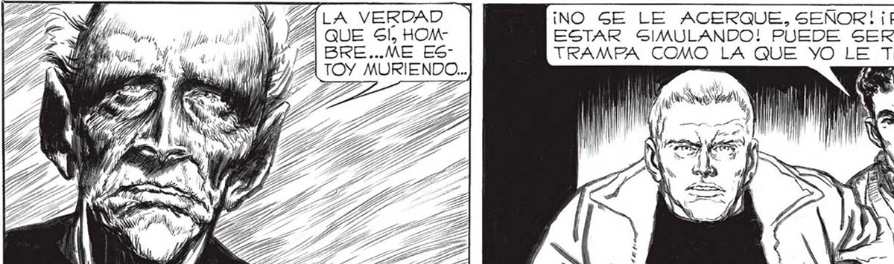
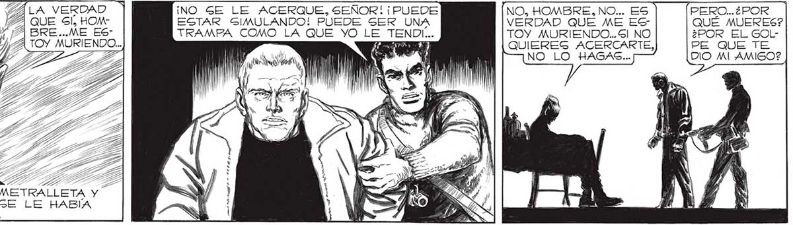
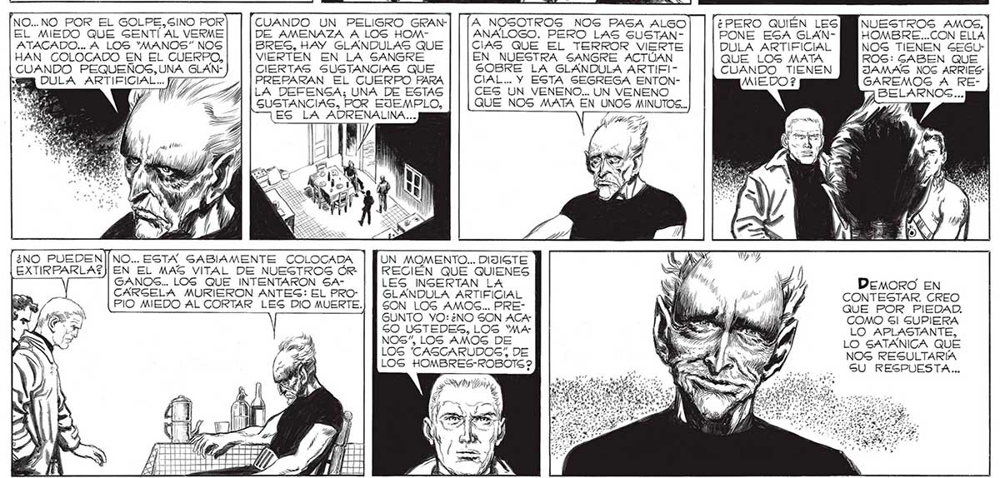

SALA VERDAD ¡NO SE LE ACERQUE, SEÑOR! ¡ PUEDE ESTAR GIMULANDO! PUEDE SER UNA TRAMPA COMO LA QUE YO LE TEN AN Y NO, HOMBRE, NO... ES VERDAD QUE ME ESTOY MURIENDO... Sl NO QUIERES ACERCARTE, NO LO HAGAS... PERO... ¿POR 173 QUÉ MUERES? ¿POR EL GOLPE QUE TE DIO MI AMIGO? ' 1 Desé A UN LADO LA METRALLETA Y. ME ACERQUE.LA PIEL GE LE HABÍA PUESTO CENIZA. NO... NO POR EL GOLPE.SINO POR CUANDO UN PELIGRO GRANEL MIEDO QUE SENTÍ AL VERME ATACADO... A LOS 'MANOS” NOS HAN COLOCADO EN EL CUERPO, CUANDO PEQUEÑOS,UNA GLANDE AMENAZA A LOS HOMBRES, HAY GLANDULAS QUE VIERTEN EN LA SANGRE CIERTAS SUSTANCIAS QUE PREPARAN EL CUERPO PARA LA DEFENSA; UNA DE ESTAS GUSTANCIAS, POR EJEMPLO, A NOGOTROS NOG PASA ALGO ANALOGO. PERO LAS SUSTANCIAS QUE EL TERROR VIERTE EN NUESTRA SANGRE ACTÚAN GOBRE LA GLANDULA ARTIFICIAL... Y ESTA SEGREGA ENTONCES UN VENENO... UN VENENO QUE NOS MATA EN UNOS MINUTOS... ¿PERO QUIEN LES PONE ESA GLANDULA ARTIFICIAL QUE LOS MATA CUANDO TIENEN NUESTROS AMOS, HOMBRE...CON ELLA NOS TIENEN SEGUROS: GABEN QUE JAMAS NOS ARRIES GAREMOS A REDULA ARTIFICIAL... 7777 — MIA BELARNOS... ¿E EG LA ADRENALINA... 1 UN MOMENTO... DIJISTE RECIEN QUE QUIENES GANOS.. LOS QUE INTENTARON SA- LES INSERTAN LA CARSELA MURIERON ANTEG: EL PROPIO MEDO AL CORTAR LES DIO MUERTE. GLANDULA ARTIFICIAL SON LOGS AMOS... PREGUNTO YO:¿NO SON ACA" 60 USTEDES, LOS 'MANOS”, LOS AMOG DE LOS 'CAGCARUDOS” DE LOS HOMBRES-ROBOTS? DEMORO EN CONTESTAR. CREO QUE POR PIEDAD. COMO Gl SUPIERA LO APLASTANTE, LO SATANICA QUE NOS RESULTARÍA SU RESPUESTA...


